Cátedra 13: Función de Partición Canónica
Herramienta central de la mecánica estadística: la función de partición $Z$ resume toda la información termodinámica de un sistema en equilibrio térmico con un reservorio a temperatura $T$.
Temas que cubre
- Ensemble canónico: sistema con $T$, $V$ y $N$ fijos en contacto con termostato
- Distribución de Boltzmann: probabilidad $P_r = e^{-\beta E_r}/Z$ de estar en el microestado $r$
- Función de partición $Z = \sum_r e^{-\beta E_r}$: suma sobre todos los microestados
- Energía media $\langle E \rangle = -\partial \ln Z / \partial \beta$
- Fluctuaciones de energía: $\sigma_E^2 = \partial^2 \ln Z / \partial \beta^2$
- Conexión con la energía libre de Helmholtz: $F = -k_BT \ln Z$
Conceptos clave
Ensemble canónico
Colección imaginaria de copias del sistema, todas con los mismos $T$, $V$, $N$ pero distintas energías. El promedio sobre el ensemble da el valor termodinámico observable. En el límite $N \to \infty$, las fluctuaciones relativas $\to 0$.
Distribución de Boltzmann
La probabilidad de encontrar el sistema en el microestado $r$ (con energía $E_r$) es $P_r = e^{-\beta E_r}/Z$. Los estados de baja energía son exponencialmente más probables; $\beta = 1/(k_BT)$ es la temperatura inversa.
Función de partición $Z$
Normaliza la distribución de Boltzmann: $Z = \sum_r e^{-\beta E_r}$. Es la "suma de estados" y encierra toda la termodinámica: $F$, $S$, $p$ y $\mu$ se obtienen derivando $\ln Z$ respecto de $\beta$, $V$ y $N$.
Temperatura inversa $\beta$
$\beta = 1/(k_BT)$ aparece naturalmente como el parámetro que caracteriza el termostato. Derivar respecto de $\beta$ a $V, N$ fijos extrae la energía interna; derivar dos veces da la varianza de energía.
Fórmulas fundamentales



Qué hay que entender
- La función de partición no es un observable — es un objeto matemático del que se extraen todos los observables termodinámicos derivando $\ln Z$ respecto de $\beta$, $V$ o $N$.
- Calcular $Z$ es el problema fundamental del ensemble canónico. Una vez obtenida, la termodinámica es automática: $F = -k_BT\ln Z$, luego $S = -(\partial F/\partial T)_V$, $p = -(\partial F/\partial V)_T$, etc.
- Para $N$ partículas idénticas e independientes (no interactuantes): $Z_N = Z_1^N/N!$ (el $N!$ evita el doble conteo de estados indistinguibles — paradoja de Gibbs).
- La distribución de Boltzmann es exponencial en la energía: a temperatura baja, el sistema colapsa al estado fundamental; a temperatura alta, todos los estados son igualmente probables.